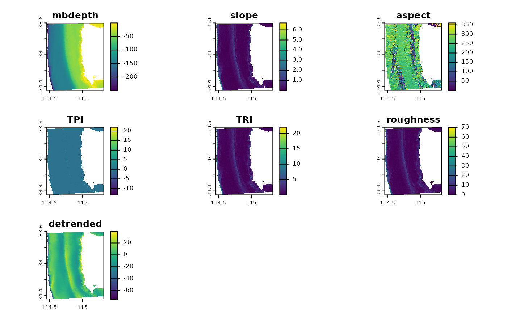

Spatially predict fish distributions
Claude Spencer & Brooke Gibbons
2023-11-13
fish-spatial-prediction.RmdThis script takes the tidy datasets created in the previous steps, uses the top models created in ‘Select top models for fish using FSSgam’. Once an appropriate model has been chosen by the user, we then provide R script to spatially predict the response variables and plot these in a tidy format.
R setup
Load libraries. All packages are available through CRAN, aside from ‘FSSgam’, which can be installed following the instructions provided in the GitHub repository https://github.com/beckyfisher/FSSgam.
library(CheckEM)
library(tidyverse)
library(mgcv)
library(devtools)
library(FSSgam)
library(here)
library(ggplot2)
library(ggnewscale)
library(viridis)
library(terra)
library(sf)
library(patchwork)Set the study name. Study names are used throughout to make for reproducible code that can be easily shifted between different campaigns and projects while still providing meaningful filenames.
name <- 'example-bruv-workflow'Load the fish length data. This data is created in the previous workflow, ‘Format & visualise fish data’.
tidy.length <- readRDS(here::here(paste0('r-workflows/data/tidy/',
name,'_tidy-length.rds'))) %>%
dplyr::filter(!is.na(mbdepth)) %>% # If this filters out any then you need to go back and create your spatial layers
glimpse()## Rows: 64
## Columns: 18
## $ campaignid <chr> "2023-03_SwC_stereo-BRUVs", "2023-03_SwC_stereo-BRUVs", "…
## $ sample <chr> "15", "17", "19", "23", "24", "26", "29", "3", "31", "32"…
## $ number <dbl> 1, 1, 8, 3, 2, 3, 4, 1, 4, 6, 1, 3, 1, 2, 4, 2, 6, 1, 13,…
## $ status <chr> "No-take", "No-take", "No-take", "No-take", "No-take", "N…
## $ response <chr> "greater than Lm", "greater than Lm", "greater than Lm", …
## $ longitude_dd <dbl> 114.8444, 114.8576, 114.7822, 114.9190, 114.8485, 114.928…
## $ latitude_dd <dbl> -34.08478, -34.09635, -34.12047, -34.12832, -34.11789, -3…
## $ depth <chr> "45.3", "43.3", "73.6", "41", "45.6", "36", "42.6", "46.7…
## $ mbdepth <dbl> -44.29804, -42.74676, -71.60112, -38.25594, -44.23959, -4…
## $ slope <dbl> 0.108975978, 0.008719478, 0.880997142, 0.444838455, 0.103…
## $ aspect <dbl> 264.03427, 30.76545, 262.35388, 294.10675, 257.20307, 40.…
## $ tpi <dbl> -0.19527912, 0.02505112, 1.04176044, 0.47694588, 0.042278…
## $ tri <dbl> 0.34487247, 0.03473282, 2.80258274, 1.83670998, 0.3347983…
## $ roughness <dbl> 0.91366196, 0.09923935, 9.01136017, 5.30128479, 1.2933082…
## $ detrended <dbl> -0.2281526, -3.1375041, 17.9911461, -8.6934719, 2.9724391…
## $ mean_relief <dbl> 2.518519, 3.333333, 2.583333, 3.555556, 3.360000, 4.00000…
## $ sd_relief <dbl> 0.8024180, 0.9128709, 0.5036102, 0.8555853, 0.4898979, 0.…
## $ reef <dbl> 0.8292683, 1.0000000, 0.9493671, 1.0000000, 1.0000000, 1.…Load the fish count data. This data is created in the previous workflow, ‘Format & visualise fish data’.
tidy.count <- readRDS(here::here(paste0('r-workflows/data/tidy/',
name,'_tidy-count.rds'))) %>%
dplyr::filter(!is.na(mbdepth)) %>% # If this filters out any then you need to go back and create your spatial layers
glimpse()## Rows: 64
## Columns: 18
## $ campaignid <chr> "2023-03_SwC_stereo-BRUVs", "2023-03_SwC_stereo-BRUVs", "…
## $ sample <chr> "10", "10", "12", "12", "14", "14", "15", "15", "16", "16…
## $ status <chr> "No-take", "No-take", "No-take", "No-take", "No-take", "N…
## $ response <chr> "total_abundance", "species_richness", "total_abundance",…
## $ number <dbl> 111, 13, 94, 15, 191, 9, 146, 16, 99, 14, 312, 18, 38, 13…
## $ longitude_dd <dbl> 114.8533, 114.8533, 114.8816, 114.8816, 114.8686, 114.868…
## $ latitude_dd <dbl> -34.08387, -34.08387, -34.13249, -34.13249, -34.07530, -3…
## $ depth <chr> "44.3", "44.3", "42.6", "42.6", "42.7", "42.7", "45.3", "…
## $ mbdepth <dbl> -42.77519, -42.77519, -42.02835, -42.02835, -41.07679, -4…
## $ slope <dbl> 0.005708777, 0.005708777, 0.013768068, 0.013768068, 0.078…
## $ aspect <dbl> 72.31942, 72.31942, 110.35012, 110.35012, 215.54254, 215.…
## $ tpi <dbl> 0.05208921, 0.05208921, 0.03892708, 0.03892708, 0.2611088…
## $ tri <dbl> 0.05208921, 0.05208921, 0.06246567, 0.06246567, 0.3096442…
## $ roughness <dbl> 0.11757660, 0.11757660, 0.30690765, 0.30690765, 0.7959022…
## $ detrended <dbl> -2.8542883, -2.8542883, -5.8822656, -5.8822656, -6.646017…
## $ mean_relief <dbl> 3.217391, 3.217391, 2.809524, 2.809524, 2.440000, 2.44000…
## $ sd_relief <dbl> 0.7952428, 0.7952428, 0.4023739, 0.4023739, 0.7118052, 0.…
## $ reef <dbl> 0.9690722, 0.9690722, 1.0000000, 1.0000000, 0.9420290, 0.…Combine the count and length data for easy spatial prediction.
## Rows: 128
## Columns: 18
## $ campaignid <chr> "2023-03_SwC_stereo-BRUVs", "2023-03_SwC_stereo-BRUVs", "…
## $ sample <chr> "10", "10", "12", "12", "14", "14", "15", "15", "16", "16…
## $ status <chr> "No-take", "No-take", "No-take", "No-take", "No-take", "N…
## $ response <chr> "total_abundance", "species_richness", "total_abundance",…
## $ number <dbl> 111, 13, 94, 15, 191, 9, 146, 16, 99, 14, 312, 18, 38, 13…
## $ longitude_dd <dbl> 114.8533, 114.8533, 114.8816, 114.8816, 114.8686, 114.868…
## $ latitude_dd <dbl> -34.08387, -34.08387, -34.13249, -34.13249, -34.07530, -3…
## $ depth <chr> "44.3", "44.3", "42.6", "42.6", "42.7", "42.7", "45.3", "…
## $ mbdepth <dbl> -42.77519, -42.77519, -42.02835, -42.02835, -41.07679, -4…
## $ slope <dbl> 0.005708777, 0.005708777, 0.013768068, 0.013768068, 0.078…
## $ aspect <dbl> 72.31942, 72.31942, 110.35012, 110.35012, 215.54254, 215.…
## $ tpi <dbl> 0.05208921, 0.05208921, 0.03892708, 0.03892708, 0.2611088…
## $ tri <dbl> 0.05208921, 0.05208921, 0.06246567, 0.06246567, 0.3096442…
## $ roughness <dbl> 0.11757660, 0.11757660, 0.30690765, 0.30690765, 0.7959022…
## $ detrended <dbl> -2.8542883, -2.8542883, -5.8822656, -5.8822656, -6.646017…
## $ mean_relief <dbl> 3.217391, 3.217391, 2.809524, 2.809524, 2.440000, 2.44000…
## $ sd_relief <dbl> 0.7952428, 0.7952428, 0.4023739, 0.4023739, 0.7118052, 0.…
## $ reef <dbl> 0.9690722, 0.9690722, 1.0000000, 1.0000000, 0.9420290, 0.…Read in the bathymetry derivatives.
preds <- readRDS(here::here(paste0("r-workflows/data/spatial/rasters/",
name, "_bathymetry_derivatives.rds")))
plot(preds)
Transform the spatial bathymetry derivatives into a dataframe to predict onto.
preddf <- as.data.frame(preds, xy = TRUE, na.rm = TRUE) %>%
clean_names() %>%
glimpse()## Rows: 73,350
## Columns: 9
## $ x <dbl> 115.1714, 115.1739, 115.1764, 115.1789, 115.1814, 115.1839, …
## $ y <dbl> -33.60361, -33.60361, -33.60361, -33.60361, -33.60361, -33.6…
## $ mbdepth <dbl> -14.83014, -13.89184, -14.18757, -14.48647, -14.47323, -14.3…
## $ slope <dbl> 0.24350203, 0.19746646, 0.17799167, 0.18316828, 0.22091857, …
## $ aspect <dbl> 339.995240, 341.597571, 21.180346, 12.600024, 356.337121, 35…
## $ tpi <dbl> -3.721524e-01, 5.277313e-01, 1.502453e-01, -1.123428e-03, 9.…
## $ tri <dbl> 0.9656481, 0.8277034, 0.6934198, 0.6945946, 0.8081013, 0.902…
## $ roughness <dbl> 2.807414, 2.421717, 2.196986, 2.156502, 2.581898, 2.606502, …
## $ detrended <dbl> -2.871674, -2.161609, -2.683798, -3.207528, -3.417629, -3.56…Manually set the best model from the full subsets model selection process. We select the ‘best’ model as the most parsimonious model within 2 AICc of the lowest AICc. We suggest you select your models using statistically rigorous criteria that best suits your analysis or project.
# Indicator species greater than size of maturity
m_mature <- gam(number ~
s(aspect, k = 3, bs = "cc") +
s(tpi, k = 3, bs = "cr"),
data = dplyr::filter(dat, response %in% "greater than Lm"),
family = tw())## Warning in smooth.construct.cc.smooth.spec(object, dk$data, dk$knots): basis dimension, k, increased to minimum possible
summary(m_mature)##
## Family: Tweedie(p=1.257)
## Link function: log
##
## Formula:
## number ~ s(aspect, k = 3, bs = "cc") + s(tpi, k = 3, bs = "cr")
##
## Parametric coefficients:
## Estimate Std. Error t value Pr(>|t|)
## (Intercept) 0.6831 0.2130 3.206 0.00331 **
## ---
## Signif. codes: 0 '***' 0.001 '**' 0.01 '*' 0.05 '.' 0.1 ' ' 1
##
## Approximate significance of smooth terms:
## edf Ref.df F p-value
## s(aspect) 1.487 2.000 2.757 0.0369 *
## s(tpi) 1.000 1.001 0.042 0.8404
## ---
## Signif. codes: 0 '***' 0.001 '**' 0.01 '*' 0.05 '.' 0.1 ' ' 1
##
## R-sq.(adj) = 0.0554 Deviance explained = 16.7%
## -REML = 62.912 Scale est. = 2.3328 n = 32
plot(m_mature, pages = 1, residuals = T, cex = 5)
# Total abundance
m_totabund <- gam(number ~
s(detrended, k = 3, bs = "cr"),
data = dplyr::filter(dat, response %in% "total_abundance"),
family = gaussian(link = "identity"))
summary(m_totabund)##
## Family: gaussian
## Link function: identity
##
## Formula:
## number ~ s(detrended, k = 3, bs = "cr")
##
## Parametric coefficients:
## Estimate Std. Error t value Pr(>|t|)
## (Intercept) 131.22 13.24 9.913 5.61e-11 ***
## ---
## Signif. codes: 0 '***' 0.001 '**' 0.01 '*' 0.05 '.' 0.1 ' ' 1
##
## Approximate significance of smooth terms:
## edf Ref.df F p-value
## s(detrended) 1 1 8.602 0.00638 **
## ---
## Signif. codes: 0 '***' 0.001 '**' 0.01 '*' 0.05 '.' 0.1 ' ' 1
##
## R-sq.(adj) = 0.197 Deviance explained = 22.3%
## GCV = 5981.2 Scale est. = 5607.4 n = 32
plot(m_totabund, pages = 1, residuals = T, cex = 5)
# Species richness
m_specrich <- gam(number ~
s(mbdepth, k = 3, bs = "cr"),
data = dplyr::filter(dat, response %in% "species_richness"),
family = gaussian(link = "identity"))
summary(m_specrich)##
## Family: gaussian
## Link function: identity
##
## Formula:
## number ~ s(mbdepth, k = 3, bs = "cr")
##
## Parametric coefficients:
## Estimate Std. Error t value Pr(>|t|)
## (Intercept) 13.9688 0.6462 21.62 <2e-16 ***
## ---
## Signif. codes: 0 '***' 0.001 '**' 0.01 '*' 0.05 '.' 0.1 ' ' 1
##
## Approximate significance of smooth terms:
## edf Ref.df F p-value
## s(mbdepth) 1 1 3.904 0.0574 .
## ---
## Signif. codes: 0 '***' 0.001 '**' 0.01 '*' 0.05 '.' 0.1 ' ' 1
##
## R-sq.(adj) = 0.0856 Deviance explained = 11.5%
## GCV = 14.251 Scale est. = 13.36 n = 32
plot(m_specrich, pages = 1, residuals = T, cex = 5)Predict each of the response variables across the extent of the bathymetry derivatives.
preddf <- cbind(preddf,
"pmature" = predict(m_mature, preddf, type = "response"),
"ptotabund" = predict(m_totabund, preddf, type = "response"),
"pspecrich" = predict(m_specrich, preddf, type = "response")) %>%
glimpse()## Rows: 73,350
## Columns: 12
## $ x <dbl> 115.1714, 115.1739, 115.1764, 115.1789, 115.1814, 115.1839, …
## $ y <dbl> -33.60361, -33.60361, -33.60361, -33.60361, -33.60361, -33.6…
## $ mbdepth <dbl> -14.83014, -13.89184, -14.18757, -14.48647, -14.47323, -14.3…
## $ slope <dbl> 0.24350203, 0.19746646, 0.17799167, 0.18316828, 0.22091857, …
## $ aspect <dbl> 339.995240, 341.597571, 21.180346, 12.600024, 356.337121, 35…
## $ tpi <dbl> -3.721524e-01, 5.277313e-01, 1.502453e-01, -1.123428e-03, 9.…
## $ tri <dbl> 0.9656481, 0.8277034, 0.6934198, 0.6945946, 0.8081013, 0.902…
## $ roughness <dbl> 2.807414, 2.421717, 2.196986, 2.156502, 2.581898, 2.606502, …
## $ detrended <dbl> -2.871674, -2.161609, -2.683798, -3.207528, -3.417629, -3.56…
## $ pmature <dbl> 1.508352, 1.380291, 1.540683, 1.758228, 1.203778, 1.207899, …
## $ ptotabund <dbl> 140.7683, 138.4064, 140.1434, 141.8855, 142.5844, 143.0622, …
## $ pspecrich <dbl> 17.83208, 17.94093, 17.90662, 17.87195, 17.87349, 17.88257, …Save out the spatial predictions. If your computer crashes this way you don’t need to run the whole script again.
saveRDS(preddf, file = here::here(paste0("r-workflows/model output/fish/",
name, "_fish-prediction.RDS")))Pivot the data to long format for easy plotting.
dat <- preddf %>%
dplyr::select(x, y, starts_with("p")) %>%
pivot_longer(names_to = "response", values_to = "value",
cols = !c(x, y)) %>%
glimpse()## Rows: 220,050
## Columns: 4
## $ x <dbl> 115.1714, 115.1714, 115.1714, 115.1739, 115.1739, 115.1739, 1…
## $ y <dbl> -33.60361, -33.60361, -33.60361, -33.60361, -33.60361, -33.60…
## $ response <chr> "pmature", "ptotabund", "pspecrich", "pmature", "ptotabund", …
## $ value <dbl> 1.508352, 140.768348, 17.832085, 1.380291, 138.406351, 17.940…Reset the response variables to loop through when plotting.
resp.vars <- unique(dat$response)Load marine park data. The dataset used here is the 2022 Collaborative Australian Protected Areas Database, which is available for free download from https://fed.dcceew.gov.au/datasets/782c02c691014efe8ffbd27445fe41d7_0/explore. Feel free to replace this shapefile with any suitable dataset that is available for your study area.
marine.parks <- st_read(here::here("r-workflows/data/spatial/shapefiles/Collaborative_Australian_Protected_Areas_Database_(CAPAD)_2022_-_Marine.shp")) %>%
st_make_valid() %>%
dplyr::mutate(ZONE_TYPE = str_replace_all(ZONE_TYPE,
"\\s*\\([^\\)]+\\)", "")) %>%
dplyr::filter(str_detect(ZONE_TYPE, "Sanctuary|National Park"),
STATE %in% "WA") %>%
st_transform(4326)## Reading layer `Collaborative_Australian_Protected_Areas_Database_(CAPAD)_2022_-_Marine' from data source `/home/runner/work/CheckEM/CheckEM/r-workflows/data/spatial/shapefiles/Collaborative_Australian_Protected_Areas_Database_(CAPAD)_2022_-_Marine.shp'
## using driver `ESRI Shapefile'
## Simple feature collection with 3775 features and 26 fields
## Geometry type: MULTIPOLYGON
## Dimension: XY
## Bounding box: xmin: 70.71702 ymin: -58.44947 xmax: 170.3667 ymax: -8.473407
## Geodetic CRS: WGS 84Loop through each response variable and create a ggplot figure for each.
for (i in 1:length(resp.vars)) {
use.dat <- dat %>%
dplyr::filter(response %in% resp.vars[i])
p <- ggplot() +
geom_tile(data = use.dat, aes(x, y, fill = value)) +
scale_fill_gradientn(colours = c("#fde725", "#21918c", "#440154"), na.value = "transparent") +
labs(fill = resp.vars[i], x = NULL, y = NULL) +
new_scale_fill() +
geom_sf(data = marine.parks, fill = NA, colour = "#7bbc63",
size = 0.2, show.legend = F) +
coord_sf(xlim = c(min(dat$x), max(dat$x)),
ylim = c(min(dat$y), max(dat$y))) +
theme_minimal() +
theme(axis.text.x = element_text(size = 7))
assign(paste0("gg_", resp.vars[i]), p)
}Combine the plots using patchwork.
gg_pmature + gg_ptotabund + gg_pspecrich +
theme(legend.justification = "left") +
plot_layout(ncol = 2, nrow = 2)